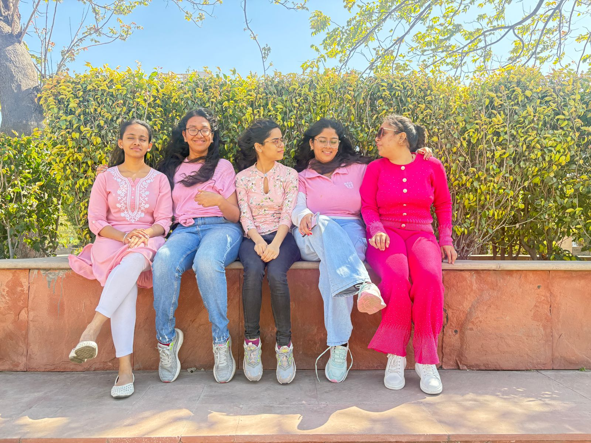

We Were Just Bored
October 2025
We wanted to play hide and seek.
We shared live locations to make it interesting.
Switching between apps kept breaking the flow.
So I made an app just for that.
I usually start building when something feels unnecessarily annoying.